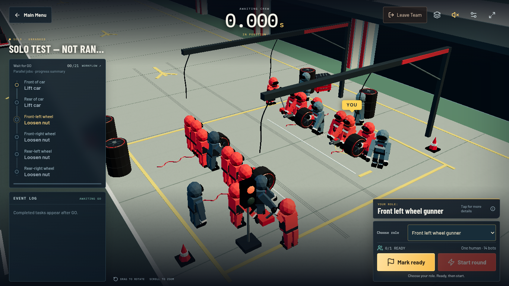

Paired before/after captures below use the same WebGL-disabled layout mode. Final WebGL captures separately show the actual unchanged 3D scene.125% acceptance uses equivalent CSS viewport and device pixel ratio, not physical OS zoom. Reports identify local vs hosted scope.
Menu with retained seat
Before V11.3After V11.4
Quick controls
Before V11.3After V11.4
Visible Solo role selection
Before V11.3After V11.4
webgl-menu-seat-1366.png · actual software WebGLwebgl-menu-seat-1440.png · actual software WebGLwebgl-menu-seat-1920.png · actual software WebGLwebgl-mobile-solo-390.png · actual software WebGLwebgl-mobile-solo-430.png · actual software WebGLwebgl-navigation-1366.png · actual software WebGLwebgl-navigation-1440.png · actual software WebGLwebgl-navigation-1920.png · actual software WebGLwebgl-solo-FL_GUNNER.png · actual software WebGL

webgl-solo-FRONT_JACK.png · actual software WebGLwebgl-solo-RELEASE_CONTROLLER.png · actual software WebGL